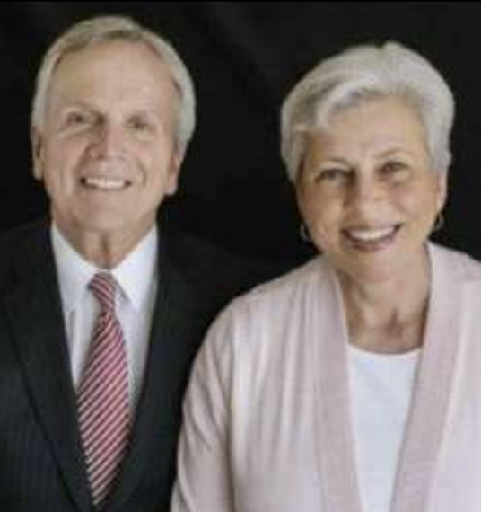
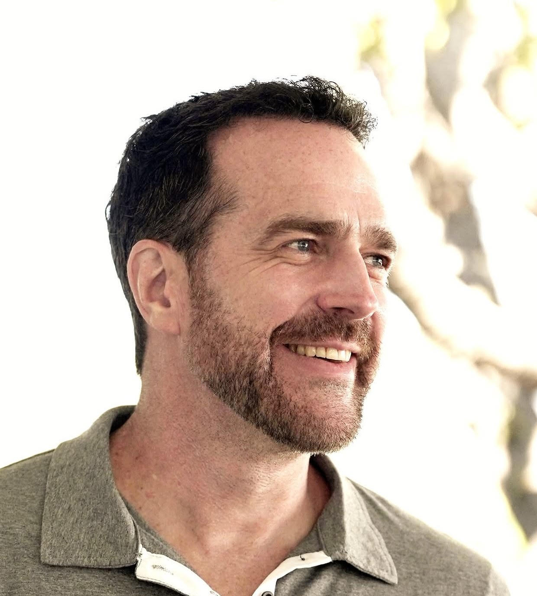

FAITH | Study the Infinite Atonement
Instructors
Dara Farnsworth
I come from a large family--like twelve tribes large. I have now had/currently have 6 parents, 11 step-siblings and 4 regular siblings, 12 of which are brothers, and about 104 cousins total (not counting step cousins, haha!).
I grew up in San Antonio, Tx, moved to Tennessee when I was 15, then came to Utah to get a degree in songwriting and production from UVU. I went on a mission to Tucson, Az, taught at the MTC for a couple of years afterwards, and unsuccessfully tried to become a seminary teacher. Now, my next adventure includes being certified as a Personal Trainer to support myself while I go to Campbellsville University for Chiropractic college in Fall of 2027.
I write and produce my own songs, learn to shuffle with my cousins' kids and practice handstands, and am painstakingly learning Hebrew because I'm fascinated with all things Biblical. And I'm so, so thankful that I (finally) get a chance to teach again, and about the Atonement of Jesus Christ no less. This is the absolute dream!!!

Dave and Kim Godfrey
Instructor Bio coming.
COVENANTS | Temple Covenants and Symbology
Instructors

Emily Utt
Instructor Bio coming.

Steven and Angela Mecham
Steve was born and raised in the Washington, D.C. area and moved to Utah to study at the University of Utah. Angela was born and grew up in Salt Lake City. The Mechams met one another at the University, married, and have lived in Salt Lake City, Utah together since 1979. They have four children and 14 grandchildren.
From 2011 to 2014 they served as mission leaders of the Micronesia Guam Mission. In May 2023, they were called to serve as CoDirectors of the Geneva Office for Human Rights Education in the Philippines. While they were there, the Philippine Department of Education adopted the Colega Children’s Rights Curriculum developed by the Church. They trained trainers to use the curriculum in the classroom. They also worked in the Manila Missionary Training Center. In December 2024, they returned home.Both Steve and Angela hold Bachelor degrees from the University of Utah and significant professional experience in education and public service.
DISCIPLESHIP | Living a Christ Centered Life
Instructors

Duane and Laura Toney
Duane and Laura most recently served in an SA ward - and loved it! We welcome this opportunity to learn together with you about Jesus Christ, as through His grace we all strive to become more like Him.
Duane grew up a Michigander, graduated from BYU with his Masters in Tax Accounting and became a CPA. In 2003, he founded a wealth management business and is now the Managing Partner of the Salt Lake Cify office of Carson Wealth, a nationwide Investment Advisor. Duane is an avid swimmer, student of Church and American History, enjoys cooking on our outdoor griddle and eating pie of any kind.
Laura grew up in Davis County, graduated from BYU with a RN degree, and worked in a variety of medical settings. She is retired, but remains the family and neighborhood nurse. She serves as a Temple Worker in the Bountiful Temple. Laura loves ministering to family and friends, preserving and sharing family stories, gospel study, walks with friends, and reading.
Together we love attending local live theaters, community service, and travel. We live in Centerville and are grateful for our 45 years of marriage, our 5 children, their spouses and our 18 grandchildren.

Steven and Lesley Mason
Instructor Bio coming.
COMMUNITY | Relationships
Instructors

Luke Hutchison
Luke Hutchison is a Kiwi (a New Zealander), a scientist, an animal lover, a polyglot, and a bobsled pilot. Luke completed his PhD at MIT and Harvard Medical School; however, the content of these classes (in full alignment with revealed doctrine) comes not from a degree, but from a near death experience (NDE).
Class Details
Sept 3rd, 10th, 17th: Short Course on Divine Masculinity and Divine Femininity
These classes will all build upon each other, so if you are interested in these topics, please try to make it to all three:
(1) Sept 3rd, 2026: From Fear to Love
The law of the telestial kingdom is fear. The law of the Celestial kingdom is love. We will discuss one of the most fundamental purposes of life: to rise above our default nature of fear and scarcity-mindedness to embody our divine potential of love and abundance.
(2) Sept 10th, 2026: Divine Masculinity and Divine Femininity
The most important sentence in the Family Proclamation is: "Gender is an essential characteristic of individual premortal, mortal, and eternal identity and purpose." Why gender? Gods and goddesses are highly gendered: the purification of our divine gendered nature through the Atonement exalts us individually. We will discuss how to embody divine masculinity (the attributes of Heavenly Father) or divine femininity (the attributes of Heavenly Mother), and how to come to know both of our Heavenly parents better.
(3) Sept 17th, 2026: Celestial Relationships
Gender polarity is the foundation of attraction, and attraction is crucial to forming strong relationships. There is no power of creation without the uniting of an exalted masculine god and an exalted feminine goddess. We will discuss how polarity and attraction actually work, and what is needed to form relationships that are strong, aligned with godliness, and pointed towards co-exaltation.

Alisa Goodwin Snell
With 30 years of experience (17 of which were as a Marriage and Family Therapist). Alisa Goodwin Snell created the Lasting Love Academy's books, audios, videos, and app to assist singles and couples as they overcome the berriers that keep them from the safe, passionate, and fun relationships they desire.
Learn MoreClass Details
Week 1. Identify fears and Attachment Patterns . Homework: prepare for the 17 Secrets .
Week 2. Review 17 Secrets and safety through assessing and offering Empathy, Self Control, Responsibility or "E.S.P."
Week 3. Creating a Lasting Plan for success and identify your patterns of success and strengths to help you move from fear to resilience.

Chelom Leavitt
Hey there -- I'm Dr. Chelom. Professor. Researcher. Writer.
Educator on intimacy, emotion, and connection. With a background in law, family relationships, and human development, I study how mindfulness, desire, and emotional safety shape our most meaningful relationships. I teach what I learn -- through courses, articles, public speaking, and global research. I currently teach at Brigham Young University, where I focus on healthy sexuality in committed relationships and how mindfulness in sexual experiences can reduce shame, increase connection, and support emotional and physical wellbeing. Learn More
Jennifer and Gary Beckstrand
Jennifer and Gary have been married for 42 years, have six children and 12 grandchildren, and love playing Pickleball. Gary (Bishop) and Jennifer recently served together for 5 years in the Ricks Creek Single Adult ward.
Jennifer Beckstrand spent much of her adult life as a stay-at-home mom, but when her kids were all in school, she pivoted to a writing career. Jennifer is a #1 Amazon and USA Today Bestselling author of The Matchmakers of Huckleberry Hill series, The Honeybee Sisters series, The Petersheim Brothers series, and The Amish Quiltmaker series for Kensington Books. Jennifer also writes sweet contemporary and historical romances. She currently has 45 books in print.
Gary Beckstrand is a retired business executive. He most recently was a Vice President of O.C. Tanner, a global recognition and workplace culture company. He is also the co-author of Appreciate: Celebrating People, Inspiring Greatness. Gary’s expertise has been sought by numerous Fortune 100 companies, and been featured frequently on inc.com, entrepreneur.com, and Forbes. Gary has spoken to tens of thousands of business leaders all over the world. Prior to joining O.C. Tanner, he held leadership positions at Franklin-Covey, Kellogg’s, and Frito-Lay.